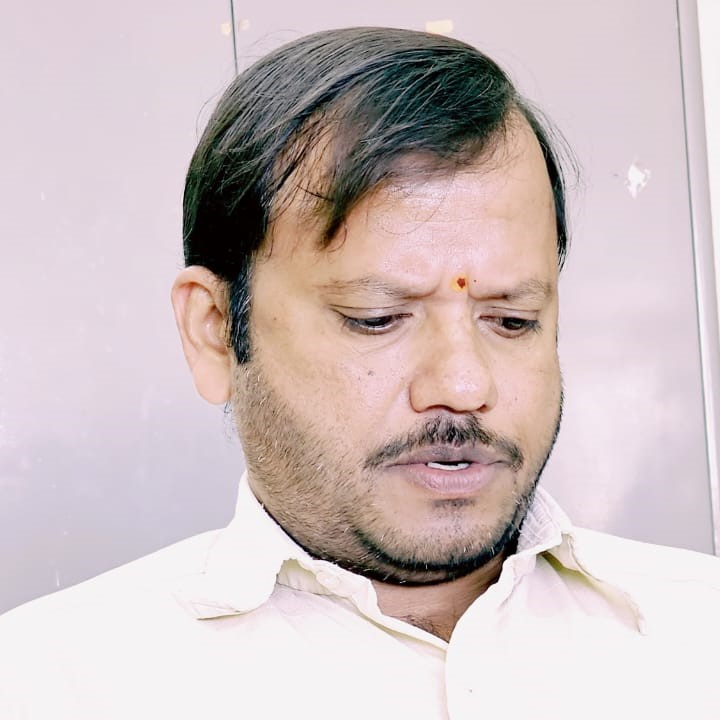

Faculty
Anubhab Khan
anubhabkhan@iisc.ac.in | twitter: @Anubhab_Khan
I am interested in understanding trait evolution, extinction and survival of populations. I like developing and optimizing methods for making wildlife genomics accessible to all. I have been conducting and teaching in various workshops to train academicians, managers and conservationists in wildlife genetics. Outside of research, I enjoy travelling, sampling beers, cooking and watching movies. I enjoy poetry and philosophy.
CV
anubhabkhan@iisc.ac.in | twitter: @Anubhab_Khan
I am interested in understanding trait evolution, extinction and survival of populations. I like developing and optimizing methods for making wildlife genomics accessible to all. I have been conducting and teaching in various workshops to train academicians, managers and conservationists in wildlife genetics. Outside of research, I enjoy travelling, sampling beers, cooking and watching movies. I enjoy poetry and philosophy.
CV
PhD students
Haradhan Ruidas
rharadhan@iisc.ac.in | twitter: @ruidas_haradhan
I study the genomics of Indian cetaceans My research focuses on developing a genome assembly, analysing population structure, and exploring genetic factors to inform conservation strategies for endangered dolphins in Indian waters. Before this, I looked into microplastic accumulation in the tissues of the spadenose shark for my master's thesis. This research focused on understanding the potential impacts on reproductive organs of sharks collected from Malvan, Maharashtra. In my free time, I enjoy cooking, hiking, painting, swimming, and crafting.
Research Interests: Population genomics, aquatic ecology, and conservation biology.
Education: BS-MS dual degree in Biological Sciences, IISER, Berhampur (2023)
rharadhan@iisc.ac.in | twitter: @ruidas_haradhan
I study the genomics of Indian cetaceans My research focuses on developing a genome assembly, analysing population structure, and exploring genetic factors to inform conservation strategies for endangered dolphins in Indian waters. Before this, I looked into microplastic accumulation in the tissues of the spadenose shark for my master's thesis. This research focused on understanding the potential impacts on reproductive organs of sharks collected from Malvan, Maharashtra. In my free time, I enjoy cooking, hiking, painting, swimming, and crafting.
Research Interests: Population genomics, aquatic ecology, and conservation biology.
Education: BS-MS dual degree in Biological Sciences, IISER, Berhampur (2023)
Pranav Datar
pranavdatar@iisc.ac.in | twitter: @pranavdatar3
My fascination with wildlife started back in high school, where I used to spend time chasing birds and butterflies. They sparked my curiosity about why things in nature are the way they are. What began as a casual interest gradually grew into a deeper passion. I am broadly interested in evolutionary ecology, with a focus on understanding the evolution of size disparity in monitor lizards. Apart from that, I enjoy philosophy, travelling, wildlife photography, and I am fascinated by humanity’s prehistoric past.
Research Interests: Evolutionary biology, ecology, and population genomics.
Education: MSc, IISc, Bangalore (2024) | BSc, Vivekanand College, Kolhapur (2022)
pranavdatar@iisc.ac.in | twitter: @pranavdatar3
My fascination with wildlife started back in high school, where I used to spend time chasing birds and butterflies. They sparked my curiosity about why things in nature are the way they are. What began as a casual interest gradually grew into a deeper passion. I am broadly interested in evolutionary ecology, with a focus on understanding the evolution of size disparity in monitor lizards. Apart from that, I enjoy philosophy, travelling, wildlife photography, and I am fascinated by humanity’s prehistoric past.
Research Interests: Evolutionary biology, ecology, and population genomics.
Education: MSc, IISc, Bangalore (2024) | BSc, Vivekanand College, Kolhapur (2022)
Int. PhD students
Aayushi Gupta
aayushigupta@iisc.ac.in | twitter: @aayushigupta901
I am currently pursuing MS under the Integrated PhD (MS PhD) programme in Biological Sciences in the Division of Biological Sciences. I am fascinated by how nature has shaped biodiversity over time, which drives my interest in population genomics and conservation biology. I am exploring the genomics of the cat family, focusing on studying hybridisation in the cat family to develop effective conservation strategies for endangered wild cats. In my free time, I love exploring new things and engaging in activities such as trekking, swimming, playing foosball, table tennis, travelling, and cooking.
Research Interests: Population genomics and conservation biology.
Education: BSc in Biosciences, University of Maharani College, Jaipur, Rajasthan (2021)
aayushigupta@iisc.ac.in | twitter: @aayushigupta901
I am currently pursuing MS under the Integrated PhD (MS PhD) programme in Biological Sciences in the Division of Biological Sciences. I am fascinated by how nature has shaped biodiversity over time, which drives my interest in population genomics and conservation biology. I am exploring the genomics of the cat family, focusing on studying hybridisation in the cat family to develop effective conservation strategies for endangered wild cats. In my free time, I love exploring new things and engaging in activities such as trekking, swimming, playing foosball, table tennis, travelling, and cooking.
Research Interests: Population genomics and conservation biology.
Education: BSc in Biosciences, University of Maharani College, Jaipur, Rajasthan (2021)
Sakhi Kundu
sakhikundu@iisc.ac.in
Evolution has always intrigued me by the way it has the power to shape the natural world. Questions like “Can we predict how a particular trait will change?” or “Can we shape evolutionary outcomes?” drive my research interests. In today’s world, where climate change and deforestation are accelerating the extinction of countless species, I feel a growing concern for our future as a collective ecosystem. As an Integrated PhD student here in the PoODL lab, I want to work on evolutionary genetics and conservation efforts of Asian elephant - a keystone species vital to our ecosystem. Apart from my academia, I value spending time with my loved ones, exploring our beautiful wildlife, humming Rabindrasangeet & just lazing around in my free time.
Research Interests: Evolutionary biology, population genetics, conservation..
Education: BSc. in Life Sciences from Presidency University, Kolkata (2024)
sakhikundu@iisc.ac.in
Evolution has always intrigued me by the way it has the power to shape the natural world. Questions like “Can we predict how a particular trait will change?” or “Can we shape evolutionary outcomes?” drive my research interests. In today’s world, where climate change and deforestation are accelerating the extinction of countless species, I feel a growing concern for our future as a collective ecosystem. As an Integrated PhD student here in the PoODL lab, I want to work on evolutionary genetics and conservation efforts of Asian elephant - a keystone species vital to our ecosystem. Apart from my academia, I value spending time with my loved ones, exploring our beautiful wildlife, humming Rabindrasangeet & just lazing around in my free time.
Research Interests: Evolutionary biology, population genetics, conservation..
Education: BSc. in Life Sciences from Presidency University, Kolkata (2024)
Project Staff
Akancha Sinha
akanchasinha@iisc.ac.in | twitter: @SinhaAkanchaa
Growing up, I was always the curious child in the family and my fascination with Biology and the natural world was fueled by watching Nat Geo channel. Animals, nature, and the intricacies of how life adapts and evolves captivated me early on. Inspired by Darwin’s principle of "Survival of the Fittest," I chose this dynamic lab as the ideal place to kickstart my journey as a researcher. My work here allows me to dive deep into Evolutionary Biology and Genetics. Outside the lab, you'll find me in my kitchen, singing while cooking food that I like. I spend my weekends doing cafe hopping with my sister.
Research interests: Evolutionary Biology, Genetics, Population Genomics.
Education: MSc. Biotechnology, Dr. D.Y.Patil Vidyapeeth, Pune (2024) | BSc. Hons. Biotechnology, M.S. Ramaiah University of Applied Science, Bangalore (2022)
akanchasinha@iisc.ac.in | twitter: @SinhaAkanchaa
Growing up, I was always the curious child in the family and my fascination with Biology and the natural world was fueled by watching Nat Geo channel. Animals, nature, and the intricacies of how life adapts and evolves captivated me early on. Inspired by Darwin’s principle of "Survival of the Fittest," I chose this dynamic lab as the ideal place to kickstart my journey as a researcher. My work here allows me to dive deep into Evolutionary Biology and Genetics. Outside the lab, you'll find me in my kitchen, singing while cooking food that I like. I spend my weekends doing cafe hopping with my sister.
Research interests: Evolutionary Biology, Genetics, Population Genomics.
Education: MSc. Biotechnology, Dr. D.Y.Patil Vidyapeeth, Pune (2024) | BSc. Hons. Biotechnology, M.S. Ramaiah University of Applied Science, Bangalore (2022)
Nithin KA
nithinka25@gmail.com | twitter: @nn_nithin
I developed a strong interest in ecology and evolution through my undergraduate and masters coursework. My fascination with this subject led me to Anubhab’s group at IISc where I hope to learn more about the topic while working as a Junior Research Fellow. I will be running population genetics simulations to investigate how small populations adapt and survive. Additionally, I will be working on developing a machine learning algorithm to identify big cats in the wild, contributing to conservation efforts. Outside the lab, I enjoy long walks, hiking, savoring a good cup of tea, and spending my weekends watching football and Formula 1.
Research Interests: Evolutionary Biology, Population Genetics, Machine Learning
Education: BS-MS Dual Degree (Biology) , IISER Thiruvananthapuram (2024)
nithinka25@gmail.com | twitter: @nn_nithin
I developed a strong interest in ecology and evolution through my undergraduate and masters coursework. My fascination with this subject led me to Anubhab’s group at IISc where I hope to learn more about the topic while working as a Junior Research Fellow. I will be running population genetics simulations to investigate how small populations adapt and survive. Additionally, I will be working on developing a machine learning algorithm to identify big cats in the wild, contributing to conservation efforts. Outside the lab, I enjoy long walks, hiking, savoring a good cup of tea, and spending my weekends watching football and Formula 1.
Research Interests: Evolutionary Biology, Population Genetics, Machine Learning
Education: BS-MS Dual Degree (Biology) , IISER Thiruvananthapuram (2024)
Prarthana Goswami
prarthana.goswami83@gmail.com
Hey there!! I am Prathana Goswami, a molecular ecology and taxonomy enthusiast. I am pursuing my PhD on molecular taxonomy and ecology of Lepidoptera. The vibrant butterflies captivate everyone. But the dull one always left out. Therefore, systematic revision, study of cryptic species, variations and polymorphism of brown dull butterflies specially from Subfamily Satyrinae are of interest to me. My field of study is the Northeast region of India, which is a very special geographical location. Their flora and fauna are quite different from those of mainland India. In the molecular wet lab, I have also worked with a variety of taxa, including non-invasive samples from vertebrates and non-invertebrates. When I am not in my lab, I like to spend my time with my little daughter Dakshayani and love to host people in my humble adobe. I am a train Kathak dancer, if time permits ghuguru is my way to unwind. Education: M.Sc. in Biotechnology (Specialization Molecular Biology) from North Eastern Hill University. (2018)
prarthana.goswami83@gmail.com
Hey there!! I am Prathana Goswami, a molecular ecology and taxonomy enthusiast. I am pursuing my PhD on molecular taxonomy and ecology of Lepidoptera. The vibrant butterflies captivate everyone. But the dull one always left out. Therefore, systematic revision, study of cryptic species, variations and polymorphism of brown dull butterflies specially from Subfamily Satyrinae are of interest to me. My field of study is the Northeast region of India, which is a very special geographical location. Their flora and fauna are quite different from those of mainland India. In the molecular wet lab, I have also worked with a variety of taxa, including non-invasive samples from vertebrates and non-invertebrates. When I am not in my lab, I like to spend my time with my little daughter Dakshayani and love to host people in my humble adobe. I am a train Kathak dancer, if time permits ghuguru is my way to unwind. Education: M.Sc. in Biotechnology (Specialization Molecular Biology) from North Eastern Hill University. (2018)
People from collaborations
Bramhi Chougule
chougulebramhi@gmail.com | twitter:
Understanding the genetic makeup and population dynamics of endangered species is crucial for their conservation. My research focuses on the population genetics of the endangered Kondana Soft-furred Rat. By studying its population size, gene flow, genetic differentiation, genetic diversity, and inbreeding, I aim to gather insights that will aid in the protection and management of this species. Environmental pressures and human activities pose significant threats to its survival, making this research vital for developing effective conservation strategies.
Research interests: Population genetics, Conservation genetics, Phylogenetics, Ecology and Evolution.
Education: MSc in Biotechnology, Jain University, Bangalore (2022)
chougulebramhi@gmail.com | twitter:
Understanding the genetic makeup and population dynamics of endangered species is crucial for their conservation. My research focuses on the population genetics of the endangered Kondana Soft-furred Rat. By studying its population size, gene flow, genetic differentiation, genetic diversity, and inbreeding, I aim to gather insights that will aid in the protection and management of this species. Environmental pressures and human activities pose significant threats to its survival, making this research vital for developing effective conservation strategies.
Research interests: Population genetics, Conservation genetics, Phylogenetics, Ecology and Evolution.
Education: MSc in Biotechnology, Jain University, Bangalore (2022)

Ramya Roopa S
ramya@wctindia.org | website: ramyaroopa.co.in
I am an ecologist working with Wildlife Conservation Trust. I study the population ecology and threats associated with endangered riverine species, such as freshwater turtles, Ganges river dolphins, and gharials, using a combination of statistical modelling, remote sensing and genetic tools. I have a special interest in understanding the ecological impacts of hunting and trade on wildlife and have been studying this issue for freshwater turtles. Due to their low population densities and elusive behaviour, visual encounter surveys alone are often insufficient for monitoring the populations of freshwater turtles. In the PoODL lab, I am testing the utility of environmental DNA to estimate the occupancy of several endangered freshwater turtle species in the Gangetic basin.
Research interests: Population ecology, Ecological modelling, Conservation biology, Hunting and wildlife trade, Genetic methods.
Education: Education: Erasmus-Mundus International Master in Applied Ecology (2018) | BSc. Environmental Science, Fergusson College (2015)
ramya@wctindia.org | website: ramyaroopa.co.in
I am an ecologist working with Wildlife Conservation Trust. I study the population ecology and threats associated with endangered riverine species, such as freshwater turtles, Ganges river dolphins, and gharials, using a combination of statistical modelling, remote sensing and genetic tools. I have a special interest in understanding the ecological impacts of hunting and trade on wildlife and have been studying this issue for freshwater turtles. Due to their low population densities and elusive behaviour, visual encounter surveys alone are often insufficient for monitoring the populations of freshwater turtles. In the PoODL lab, I am testing the utility of environmental DNA to estimate the occupancy of several endangered freshwater turtle species in the Gangetic basin.
Research interests: Population ecology, Ecological modelling, Conservation biology, Hunting and wildlife trade, Genetic methods.
Education: Education: Erasmus-Mundus International Master in Applied Ecology (2018) | BSc. Environmental Science, Fergusson College (2015)
Research Associate
Prarthana Goswami
prarthana.goswami83@gmail.com
prarthana.goswami83@gmail.com
Personnel liaison
Deborah Davy
debbie.exmoors@yahoo.com | twitter: @deborahdavy5
The majestic horse is Killbride. Deborah will introduce herself soon
Education: PhD, University of Glasgow (2024)
debbie.exmoors@yahoo.com | twitter: @deborahdavy5
The majestic horse is Killbride. Deborah will introduce herself soon
Education: PhD, University of Glasgow (2024)
Lab Manager

Manjunatha